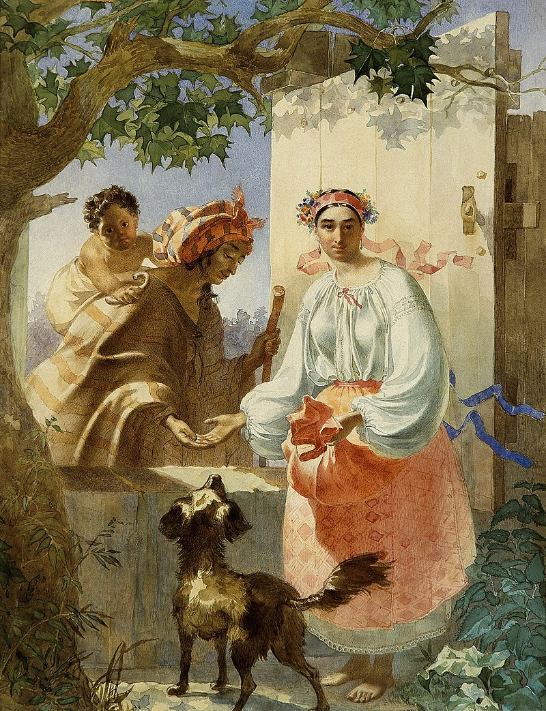
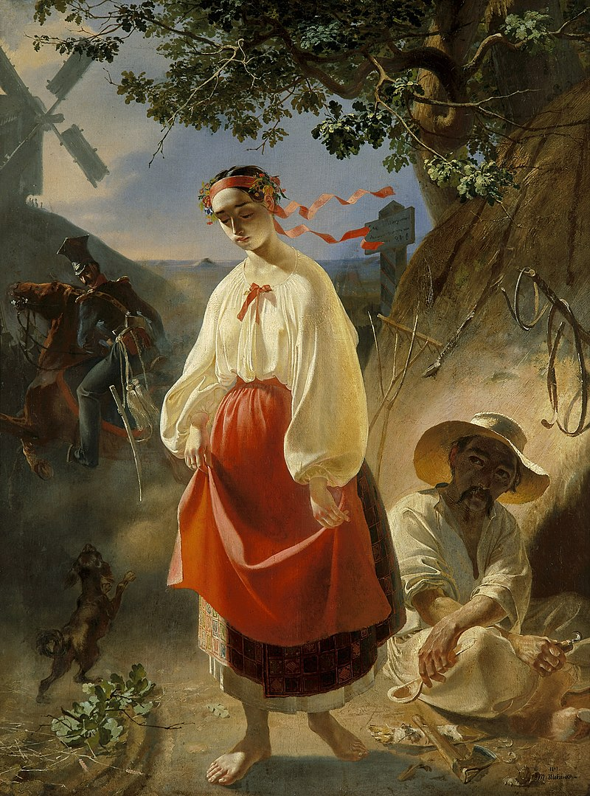
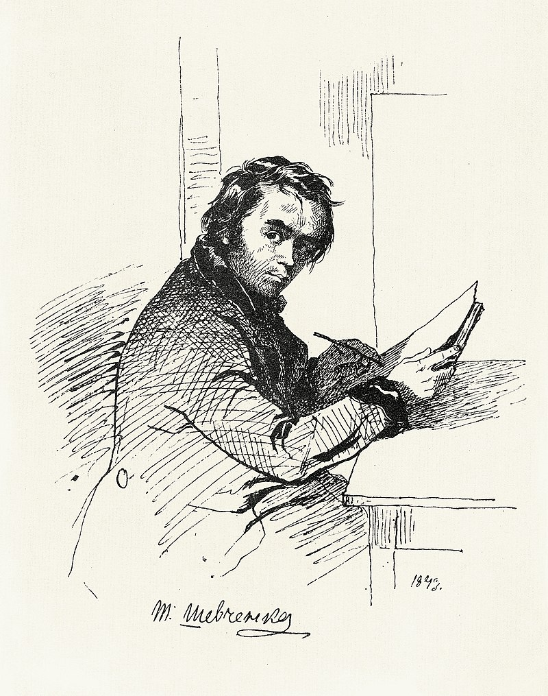
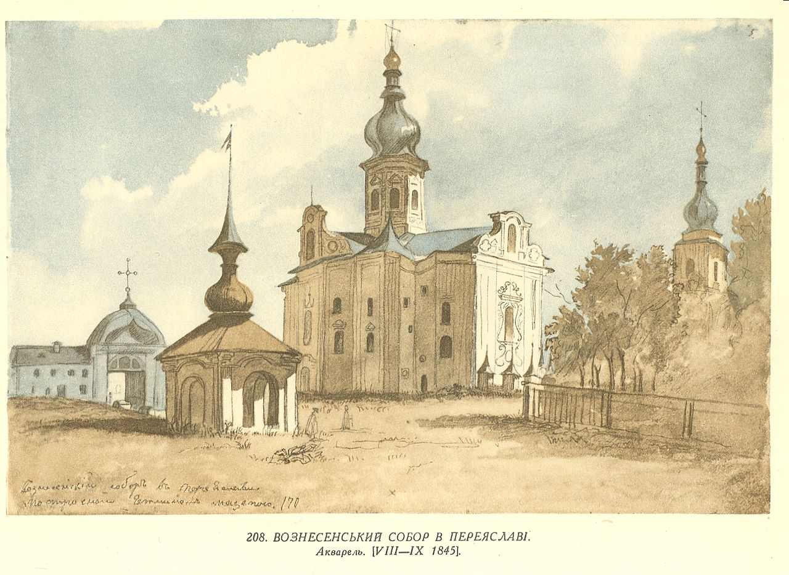
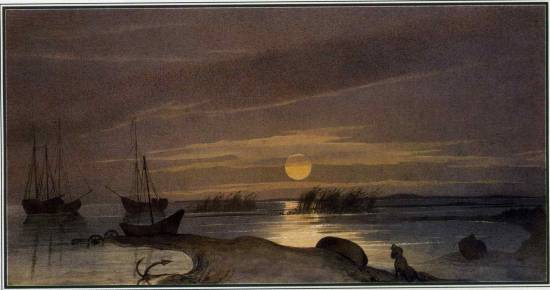
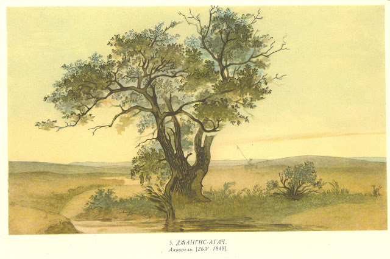
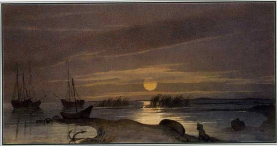
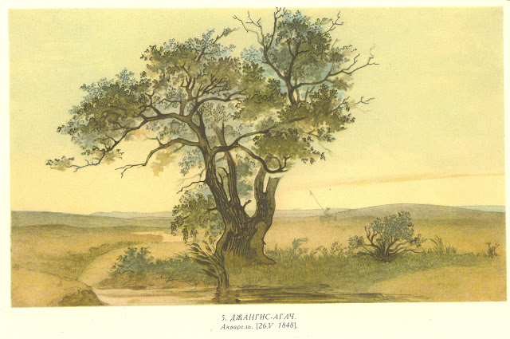
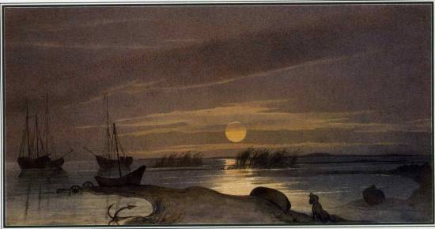
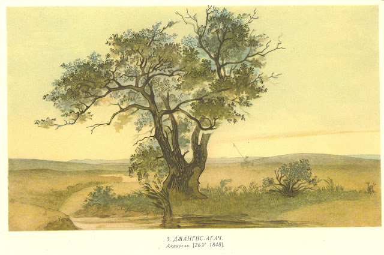

Головна
Інформація
Статті
Контакти
Галерея
Роботи Шевченка
«Циганка-ворожка» (1841)

«Катерина» (1842)

Шевченко, автопортрет (1843)

«Вознесенський собор в Переяславі» (1846)

Пожежа в степу (1848)
Місячна ніч на Косаралі (1848-49)

«Джангисагач» (1848)

 Місячна ніч на Косаралі (1848-49)

«Джангисагач» (1848)

Місячна ніч на Косаралі (1848-49)

«Джангисагач» (1848)
